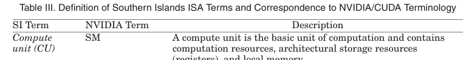
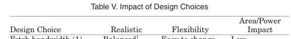
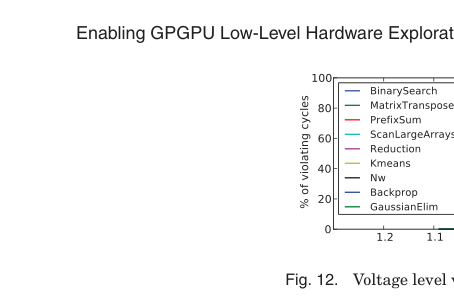
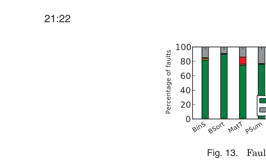

本报告由大模型自动生成，可能存在理解、归纳或数据转述错误；请以原论文为准。 Enabling GPGPU Low-Level Hardware Explorations with MIAOWRaghuraman Balasubramanian, Vinay Gangadhar, Ziliang Guo, Chen-Han Ho, Cherin Joseph, J. Menon, Mario Paulo Drumond, Robin Paul, Sharath Prasad, Pradip Valathol, Karthikeyan Sankaralingam · ACM Transactions on Architecture and Code Optimization · 2015 · 原文 · PDF 报告模型：gemini-3.1-pro-preview / high 这是一篇发表于 ACM TACO (2015) 的体系结构领域经典论文《Enabling GPGPU Low-Level Hardware Explorations with MIAOW: An Open-Source RTL Implementation of a GPGPU》。该文章针对当时图形处理器（GPU）研究过度依赖高层软件模拟器、缺乏底层硬件描述的痛点，提出并开源了一个基于真实指令集（AMD Southern Islands）的寄存器传输级（RTL）GPGPU 硬件实现——MIAOW。 以下是按论文逻辑结构对本文背景、设计、实现与案例研究的详细解析。 1. 引言与问题背景 (Introduction)问题背景 在计算机体系结构研究中，通用图形处理器（GPGPU，背景补充：利用最初为图形渲染设计的 GPU 架构来加速科学计算、深度学习等通用并行任务，此背景补充原文未说明）已经成为主流。为了进行微架构研究，研究人员必须依赖工具。在 CPU 领域，学术界早已拥有 OpenSPARC、FabScalar 等开源的 RTL（原文未定义/未说明全称与背景，通常指 Register Transfer Level，寄存器传输级，背景补充：一种用于描述数字电路数据流和控制信号的硬件描述语言层级，可直接被电子设计自动化 EDA 工具综合为底层逻辑门。注：EDA 一词原文完全未出现，此为原文未说明的背景补充）模型。这种底层模型允许研究人员详细评估微架构改动对芯片面积、功耗、时序和物理可靠性的影响。 然而在 GPU 领域，当时的研究高度依赖 GPGPU-Sim 等性能模拟器（Simulator）。模拟器虽然能快速验证高层概念，但无法提供关于微架构和物理设计的详细视图。随着 GPU 研究的深入，许多关于功耗、面积或电路级故障的设计想法，由于缺乏真实的 RTL 级框架而无法得到详细的量化评估。 本文核心大意与目标 为了填补这一空白，作者团队开发了 MIAOW（Many-core Integrated Accelerator Of Wisconsin）。MIAOW 并非一个试图在性能上击败商业芯片的完整 GPU，而是一个用于研究的开源硬件基础设施。 作者为 MIAOW 设定了三个核心目标：（1）真实性（Realism）：反映工业界 GPU 的设计原则和实现权衡；（2）灵活性（Flexible）：易于修改以适应不同类型的前瞻性研究；（3）软件兼容性（Software compatible）：能够直接运行未经修改的基于 OpenCL（原文未定义/未说明其全称与背景，通常指一种跨平台的异构计算编程标准）的应用程序，而无需依赖内部定制编译器。 明确的“非目标”包括：不寻求实现图形渲染功能、不追求适配所有应用程序（接受功能子集）、不将内存控制器或片上网络（OCN）实现为 RTL。 2. MIAOW 架构设计 (MIAOW Architecture)本节介绍了 MIAOW 的指令集支持和硬件组织结构。为了理解后续内容，作者沿用了 AMD 的专用术语，本文在此先对这些强相关的底层概念进行定义（对照表 3 / Table III）： 
指令集与架构概览 软件编译器、库或作者做出的设计选择：作者选择实现了 AMD Southern Islands (SI) 指令集的一个子集（共 95 条指令）。之所以选择 SI，是因为它是一个干净的设计，拥有完整的 OpenCL 编译器和应用程序生态。由于资源限制，且基准测试中鲜少极度依赖 64 位运算，作者选择仅支持 32 位整数和浮点操作，这是一个明确的简化选择。 MIAOW 包含一个超线程调度器（Ultra-threaded Dispatcher），用于将工作组分配给各个 CU。而在 CU 内部，流水线被划分为：取指（Fetch）、波前池（Wavepool，作为指令队列）、解码（Decode）、发射/调度（Issue/Schedule）、向量 ALU（原文未定义/未说明全称，通常指 Arithmetic Logic Unit，算术逻辑单元，用于处理波前）、标量 ALU 以及加载/存储单元（LSU）。 微架构的约束与平衡设计 在决定微架构参数时，作者进行了细致的权衡（如表 5 / Table V 所示）。 例如，硬件/ISA 强制的约束是每个波前固定包含 64 个工作项。但作者在设计选择上采用了 16 宽度的向量 ALU（即每个周期处理 16 个工作项，需要 4 个周期处理完一个波前）。为了实现系统平衡（Machine Balance），作者将取指带宽设为 1（假设缓存命中，每周期取一条指令），指令发射带宽也设为 1。由于配置了 4 个整数和 4 个浮点向量 ALU，这样的参数组合正好允许流水线每周期完成一条完整指令的处理，避免了内部数据拥堵。  3. 实现细节与跨层物理分析 (Implementation)混合实现策略 为了平衡真实性与灵活性，MIAOW 采用了混合实现。核心计算部件（CU、超线程调度器）使用可综合的 Verilog RTL 编写；而片上网络、L2 缓存和内存控制器则使用行为级的 C/C++ 模型编写。Verilog 与 C++ 之间通过 PLI（原文未定义/未说明全称与背景，通常指 Programming Language Interface，Verilog 调用外部 C 函数的标准接口）进行通信。这使得研究人员既能评估计算核心的物理开销，又能免于深陷复杂的内存控制器 RTL 细节。 体系结构与物理设计的跨层接口 本节重点展示了架构设计是如何通过物理综合工具转化为物理指标的。作者使用 Synopsys Design Compiler（用于逻辑综合）和 IC Compiler（用于布局布线），结合 Synopsys 32nm 工艺库对 MIAOW 的 CU 进行了物理综合。
同时，作者还将 MIAOW 综合到了 Xilinx Virtex7 FPGA 上（代号 Neko）。在这里遇到了严格的硬件强制约束：FPGA 上的块内存（BRAM）最多只支持双端口，而 GPU 架构需要多端口寄存器，作者不得不通过存储体划分（Banking）和双倍倍频（Double-clocking）来满足端口和延迟要求。 4. 评估：MIAOW 是否真实？(Is MIAOW Realistic?)为了证明 MIAOW 能够支撑有意义的研究，作者在面积、功耗和性能上将其与 AMD Tahiti 和 NVIDIA Fermi 等商业芯片（或已有的学术模型）进行了对比。
5-7. 案例研究：MIAOW 启用的四种研究探索为了展示拥有真实 RTL 模型对学术界的价值，作者执行了四个案例研究，覆盖了传统架构、新方法以及模拟器验证。 案例一：为传统微架构研究提供物理设计视角（线程块压缩 TBC）背景与做法：在软件模拟器时代，学者们提出过一种叫 Thread Block Compaction (TBC) 的技术：当一个波前遇到分支导致某些工作项闲置时，硬件动态地把不同波前里的活跃工作项“压缩”合并到一个新波前中，从而提高 ALU 利用率。作者在 MIAOW 中实际用 RTL 实现了 TBC。 物理反馈与结果：在 RTL 中实现 TBC 要求在“发射（Issue）”阶段维持大量动态生成的寄存器偏移量表，不仅增加了寻址复杂性，还要对寄存器页面进行复杂的信号路由。综合结果指出：增加的控制逻辑使关键路径延迟增加了 32%，发射级面积从 增加到 。 结论：这个案例有力地证明了，仅在高层模拟中显得可行的架构创新，在考虑其实际实现复杂性时，可能会因显著增加关键路径延迟而需要进一步的设计细化。 案例二：探索全新的研究方向（基于 GPU 的采样双重模块冗余 Aged-SDMR）背景与做法：这是作者团队之前针对 CPU 提出的电路故障预测技术（Virtually Aged Sampling DMR, Aged-SDMR）。其原理是通过主动降低供电电压（产生“虚拟老化”效果），刻意让慢速路径暴露出故障，同时让 1% 的程序在两个核心上冗余执行以比对结果。GPU 缺乏操作系统的精细干预，难以直接套用。 作者利用 MIAOW 发现，GPU 的“工作组”天然具备隐式检查点特性。他们在 RTL 的超线程调度器中加入逻辑，将 1% 的工作组同时发射给正常的 CU 和降低电压的“检查者 CU”，并比对它们写入全局内存的数据（校验和）。 结果：修改仅增加了 8.69% 的 CU 逻辑面积，证明了纯微架构级的 GPU 电路故障预测是完全可行的，且设计复杂度和开销较低。 案例三：GPGPU 中的时序推测 (Timing Speculation)背景与做法：时序推测是指让电路在低于设计指标的电压或时钟周期下运行。作者通过带延迟感知的门级仿真获取 MIAOW 中每个触发器在不同基准测试下的数据到达时间，再结合 SPICE 仿真建立电压降低（ reduction，单位为 mV 或 V，原文未使用 符号；其中 表示电压，下标 的具体含义原文未定义/未说明，通常指 drain-to-drain 漏极电源电压）与延迟变化的关系。 结果：如图 12 / Fig. 12 所示，随着电压 降低，早期错误率上升缓慢，直到降压达到 （标称电压为 ）时，错误率才突增至 6%。这说明 GPU 具有时序推测的潜力。由于缺乏 RTL，这类研究以前很难在 GPU 上开展。  案例四：校验/校准基于模拟器的硬件表征（瞬态故障注入）背景与做法：以往基于高层软件模拟器的研究由于看不到底层电路级现象，往往会遗漏许多掩蔽效应。作者在 MIAOW 的 RTL 中随机选取了 200 个触发器，并在运行中人为注入单比特翻转（Bit-flip）瞬态故障。 结果：如图 13 / Fig. 13 所示，实验被分为“所有触发器均注入（MIAOW-All）”和“排除寄存器文件（MIAOW-noRF）”等对照组。结果显示，如果将故障注入范围包含整个芯片，超过 90% 的故障落入了“灰色地带（Gray Area）”——即输出轨迹匹配但一个或多个触发器不匹配（尚未损坏，但不能排除静默数据损坏 SDC）。这主要是因为 GPU 庞大的寄存器文件中存在大量未被有效利用的区域。这为模拟器研究提供了细粒度的敏感度信息校准。  8. 总结 (Conclusion)主线串联与总结 整篇文章的主线十分清晰：遇到问题（GPU 架构研究长期缺乏底层物理和时序反馈） 构建工具（作者开发了兼容 OpenCL 且结构平衡的 MIAOW RTL 开源框架） 物理校准（通过跨层的物理综合与商业芯片对比，验证了工具在面积、功耗上的合理性） 证实价值（通过 TBC 验证了模拟器忽视的物理延迟代价，通过 SDMR 和时序推测开拓了 RTL 依赖的新研究领域，通过故障注入校准了高层模拟的表征）。最终，MIAOW 成功提供了一个有用的研究工具。 关键假设、局限与结论边界
|